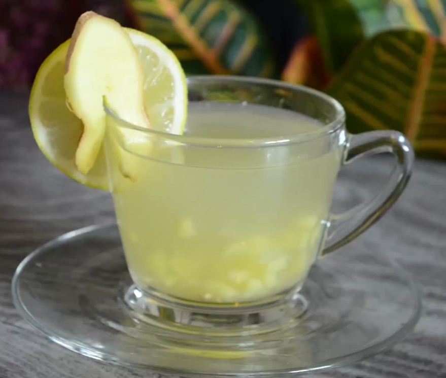

Ingwertee

Beschreibung
Ingwertee von einer Thailänderin.
Sehr gut bei Halsschmerzen.
Zutaten
Anleitung
- Wasser aufkochen.
- Ingwer in kleine Würfel schneiden. Würfel mit Knoblauchpresse in Tasse ausdrücken und anschließend Würfel mit in Tasse geben.
Das Auspressen kann auch übersprungen werden und die Würfel können direkt in die Tasse gegeben werden (hat für mich gereicht). - Tasse mit Ingwerwürfeln mit kochendem Wasser aufgießen, umrühren und 5 min. stehen lassen.
- Honig auf Teelöffel geben und in Ingwertasse einrühren, bis der Honig vollständig vermischt ist.
- Nach Aussage der Thailänderin sollte man Honig nie in kochendes Wasser geben, weil das gem. traditioneller thailändischer Medizin toxisch für den Körper wäre -> vorher 5 min stehen lassen. - Eine viertel Zitrone über Tasse auspressen und einrühren.
- Wieder Aussage der Thailänderin - Zitrone auch nicht in kochendes Wasser, weil sonst das Vitamin C teilweise zerstört wird.
Ich habe nicht überprüft, ob an ihren Aussagen was dran ist, aber es ergibt sich dadurch eine Art Ritual bei der Zubereitung, was für einen kranken Körper vlt. gar nicht so schlecht ist (alles langsam machen).